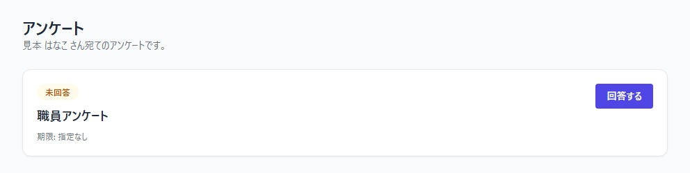
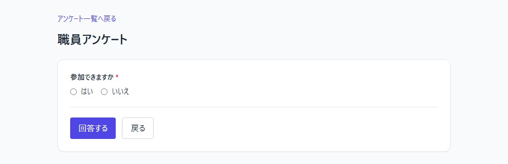
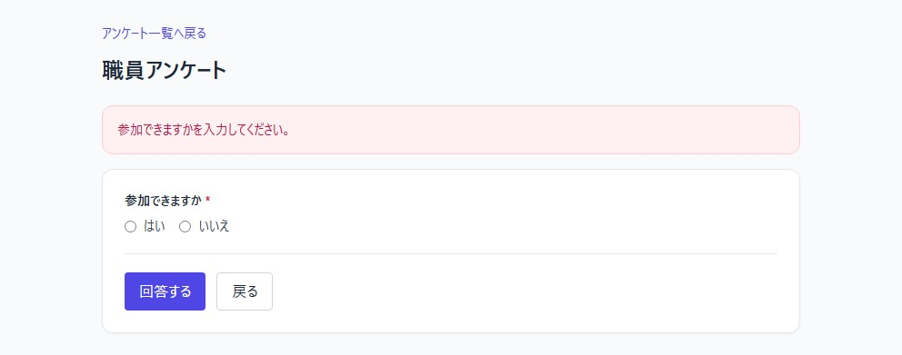
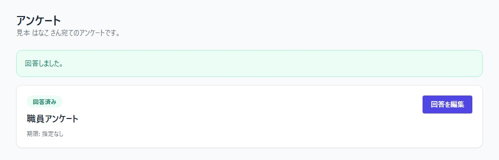
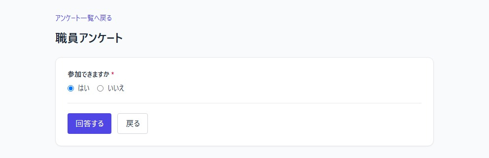

お知らせ・アンケート／回答する職員向け
職員向けアンケートに回答・再回答する
自分に届いたアンケートを開き、回答を保存したことを確認します。回答できる期間内は、保存した回答を開いて変更できます。
職員画面のメニュー →「アンケート」（作成用の「アンケート管理」とは別の入口）
画面はすべて架空の例です。画像を押すと拡大できます。
1自分宛てのアンケートを開く
職員用の「アンケート」を開き、タイトルと回答状況を確認して対象を開きます。自分が対象で、公開中かつ期間内のアンケートに回答できます。見つからないときは、対象者・公開期間を作成担当者に確認します。

2質問に回答し、必須の欄を確かめる
説明と期限を読み、質問ごとに回答します。必須の質問を空欄にすると保存できません。下の例は「はい／いいえ」を選ぶ質問です。




入力をやめる場合は、保存前に「戻る」や「アンケート一覧へ戻る」を押します。入力途中の内容は保存されません。
3回答するを押し、保存完了を確認する
「回答する」を押すと、その内容で回答が保存されます。別の確認画面を挟みません。一覧へ戻り「回答しました。」の案内と回答済みの表示を確認します。エラーが表示された場合は、回答完了とは扱わず内容を直します。

4保存した回答を変更する
回答できる期間内に同じアンケートを開くと、保存した回答が表示されます。必要な部分を直し、もう一度「回答する」を押して保存します。開いただけでは回答は更新されません。

公開終了や期限切れの後は回答を変更できません。訂正が必要な場合は作成担当者に相談してください。画面を戻る操作では、保存済みの回答は削除されません。